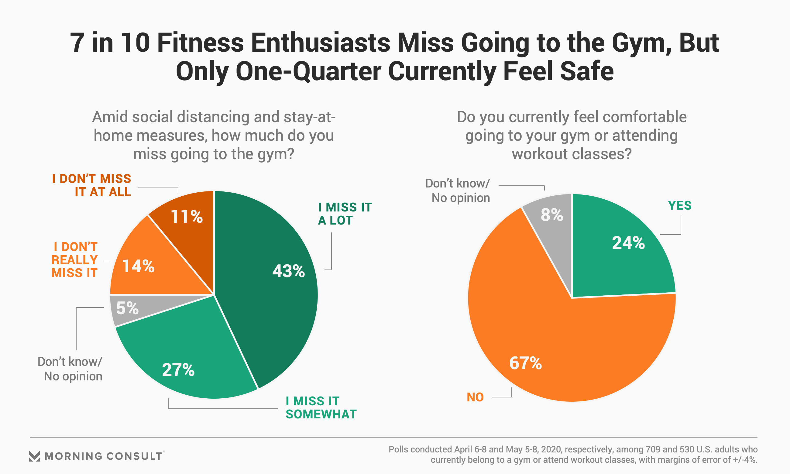
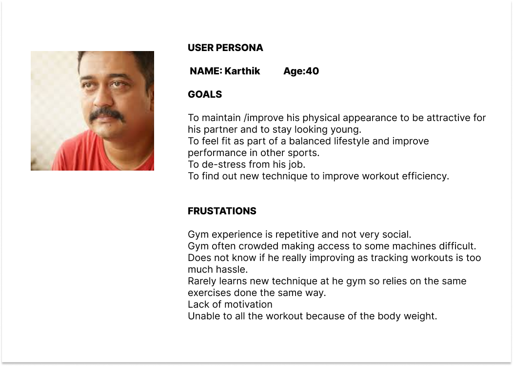

HERE
IS
MY
AND
SOME
SOLUTIONS
FITNESS APPLICATION
U BUILD U
INTRODUCTION
In the pandemic many turned lazy and gained weight. Many of our daily routiens changed during the pandemic time to online. So this project is based on focusing the user to do workouts.
RESEARCH
User Resarch done to find the reasons for not using fitness app
No time
Stress
No visible changes in their body
Boring workouts
Lack of motivation
Many people are simply not motivated enough to begin an exercise routine.
They may think exercise as something that is too much work, too boring, or something that is just not for them.
Perhaps many have tried exercising in the past and were met with failure, or you quit because you did not enjoy it.
The most common reason people give for not exercising is that they simply do not have the time for it.
THE MAIN GOAL OF THE APPLICATION
Weight loss
Time management
Customizable workouts
Motivation
Updates on workouts & challenges
Toned body
KEY FEATURES OF THE CUSTOMIZED APP
The main features of the application focused in engaging the user to do workouts and stay motivated.
Customizable workouts
Latest fitness updates
Stop & Start voice assistant support
Updates on workout & challenges
Usually in all fitness app, there will be only a certain set of workouts and challenges. That may make the
user feels so boring while they keep on using the app. SO, in this product , there will be weekly updates
about new workout and challenges. Which can make the user to be interactive.
Motivation: (WAIT & START)
In all the fitness application , there will be timer for each set of workouts. While doing the exercise , most of
the user are feeling that they can not go as fast with the app. So they may feel these routine are not suitable
for them and get demotivated easily. So, in this product, a wait and start command will be included as voice
asistant. If the user feels exhausted in between while doing workouts, they can say ‘ WAIT’ to pause the timer.
And once they feel ok, they can start the workout from where they stop, by saying ‘START’.
This product can allow user to use voice assistant if they can’t go fast with the app ,stop in between the
workout and start when they feel ok. User can experience Hand free workout, motivate and go further.


Conclusion
Customizable workouts
Latest fitness updates
Stop & Start voice assistant support
Updates on workout & challenges
Usually in all fitness app, there will be only a certain set of workouts and challenges. That may make the user feels so boring while they keep on using the app. SO, in this product , there will be weekly updates about new workout and challenges. Which can make the user to be interactive.
Motivation: (WAIT & START)
In all the fitness application , there will be timer for each set of workouts. While doing the exercise , most of the user are feeling that they can not go as fast with the app. So they may feel these routine are not suitable for them and get demotivated easily. So, in this product, a wait and start command will be included as voice asistant. If the user feels exhausted in between while doing workouts, they can say ‘ WAIT’ to pause the timer. And once they feel ok, they can start the workout from where they stop, by saying ‘START’. This product can allow user to use voice assistant if they can’t go fast with the app ,stop in between the workout and start when they feel ok. User can experience Hand free workout, motivate and go further.
In order for app users to reach their full potential, we need to ensure that they stay engaged and are provided with the best support. The changes in the workout frequently and vary the exercises do to help avoid redundancy which leads to boredom.Customization allows to find the workout plan and choose the workout which can be comfortable. Each body type is different and their endurance is different. So user can skip the workouts they may feel hard to do. The workout routine and challenge can be choose accordingly can make the user sutainability in using application.
FUTURE TRANSPORTATION IN RURAL PLACES OF INDIA
Research Question:
How a design can solve the transport problem in INDIA in the next 10 years?
INTRODUCTION
The main aim of choosing this topic is to address the transportation issues faced in most of the cities and rural area of India. India is the second most populated country in the world. And it is the developing country too. The main advantage is the manpower and the disadvantage is the transportation. There are no sufficient buses , trains or proper broad roads to reach the designation. So I just want to solve some of the issues which can be easy and cost effective to make it in short period. Creating a application to access the possible way to solve the bus transportation issues.
PROBLEMS:
· No sufficient public transportation (Bus, trains)
· Timings of the buses are not.
· No proper parking system, which makes the transportation even more complicated.
· Bus stops will have no proper sign board to identify.
· Language problem to understand the routes , when go out of the states.
· Ticket fair is unpredictable in all buses.
· High cost for local transportation.
· No offers or pass for the buses.
· Roads are damaged in most of the rural areas.
· People are not following the taffic rules.
· Taxi and auto services are too high and unpredictable.
PROBLEM SOLUTIONS:
The problem solutions can be in various forms, like increasing overall transportation facilities, increasing number of buses, redesigning transportation in all cities.
· Cycle way ( to reduce the need of public transport for shorter distance)
· Gps in local buses to track the timing
· Predicting the alternative and connecting transportation.
· Bus pass and offers
· Common ticket fair for all transport.
· Regulating the taxi and auto fair
· Detecting the free parking area.
· Online payment for all transportation.
· Language translation.
Bus transport problem faced in south India(Tamil nadu)
Bus timings are not available, cant locate where the bus is travelling, Fare is different in each bus, unable to find the nearest bus stop in new cities.
Creating an application to solve this issue. Using GPS locate the nearest bus stop or starting point. It helps the user to navigate to nearest bus stop.Information about all the buses are available according to the start time. Can sort according to private bus or public bus. The user can also switch an search for different travel dates. Bus tracking, live gps to track tha.
Suervey Questions:
How to establish route in effective way?
What should be the minimum space between the stops?
How to figure out the stop location?
What type buses can solve the transport issues?
How to create bus stop signs to make it visible?
How to design the amenities to make the passengers covinent?
How to install new bus station in new location?
How to relocate bus stops in crowed area to avoid traffic?
What should be length of the bus stop?
Installation of timings and schedule of the buses
How to implement the application which is accessible to passengers?
How to find best route to fix the traffic issues?
How municipal can solve the issue of bus stops?
How to make the facilities accessible to disable and aged passengers?
How seats to be designed to avoid the crowd ?
MIND MAPING
MOOD BOARD
STATISTICS
FLOW OF APPLICATION
ALZHEIMERS REMINDER APPLICATION
MIND ME
INTRODUCTION
What is Alzheimer’s Disease?
- Alzheimer’s disease is the most common type of dementia.
- It is a progressive disease beginning with mild memory loss and possibly leading to loss of the ability to carry on a conversation and respond to the environment.
- Alzheimer’s disease involves parts of the brain that control thought, memory, and language.
- It can seriously affect a person’s ability to carry out daily activities.
Support for family and friends
Currently, many people living with Alzheimer’s disease are cared for at home by family members. Caregiving can have positive aspects for the caregiver as well as the person being cared for. It may bring personal fulfillment to the caregiver, such as satisfaction from helping a family member or friend, and lead to the development of new skills and improved family relationships.
Although most people willingly provide care to their loved ones and friends, caring for a person with Alzheimer’s disease at home can be a difficult task and may become overwhelming at times. Each day brings new challenges as the caregiver copes with changing levels of ability and new patterns of behavior. As the disease gets worse, people living with Alzheimer’s disease often need more intensive care.
MIND ME
Application as solution to make the alzheimer's patient independent by monitoring the brain waves through the head band device with brain current and set the notifications in the mobile devices.
This application will help the patient to do the basic daily activities without the help of the family and make them feed the task which they dont want to forget.
PRODUCT : MIND ME.
What I got to know is after the collection of signals from the brain. They need to be notified by current pluse or any kind of beep sound to mobile. So they can remind the most important things. The dashboard should have PERMANENT REMAINDER, MEDICAL REPORT, LOCATION TRACKER, PHONE HISTORY, DEVICE FINDER ,UPCOMING TASK PICTURES OF FAMILY, EMERGENCY CONTACT
IN APPLICATION
Mind waves graph. Set alarm. Phone history of activities. Phone call recorder. Personal gallery. Personal identity voice note.
IN DEVICE ,
Device finder button, charge alarm and location tracker.
MIND MAPING